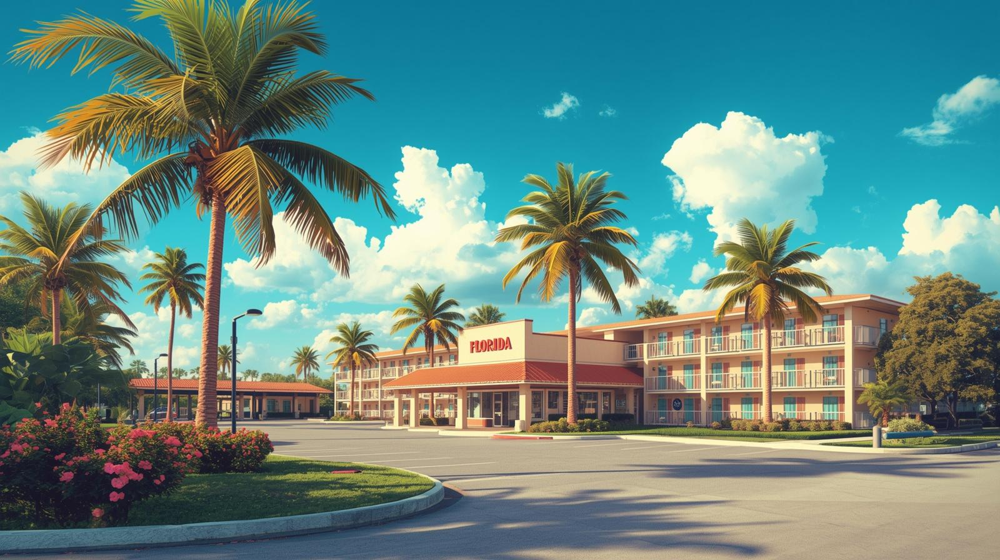
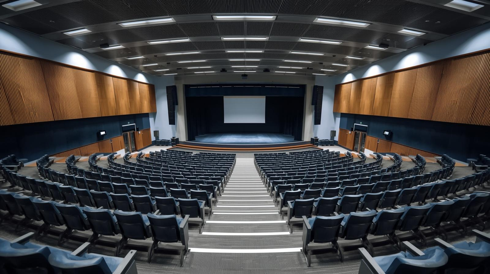
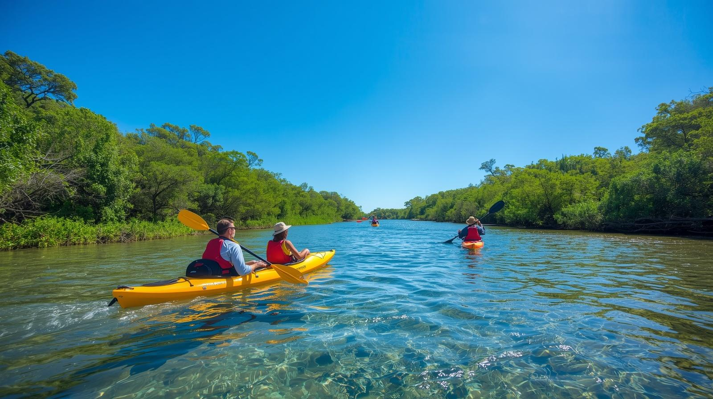

Lodging
Invited participants to the Applied Algebra Days are housed just south of the Tampa campus. Part of our group is at the Home2Suites hotel while the rest is at the La Quinta Inn & Suites. Both locations offer complimentary breakfast, and have a pool. Check their respective websites for a complete list of amenities.


Workshop Venue
The talks of our workshop will take place at the CMC building of the USF. Thursday and Friday, talks will be delivered in CMC 147 (a room that belongs to the Advanced Visualization Center) while the Saturday talks will happen in CMC 141 (which is a regular classroom) . Both rooms are in the west aisle of the CMC building. They are an approximate 15min walk away from the hotels.
Important: Very important: unfortunately, drinks and food are not allowed in CMC 147.
Meals and Social Events
To facilitate access to restaurants, we will organize rides to the University Square Mall on Friday and Saturday evening. From the mall’s parking lot, one can immediately access a variety of restaurants: Vietnamese, Indian, Chinese noodle house, Mexican, Suhis, Irish pub, etc … Rides will leave from the CMC parking lot, at a time TBD. If you miss the ride, the mall is a 25 min walk away from the CMC building.
Thursday evening, we will be holding a welcome reception a World of Beer. We will organize rides to to/from the venue. If you miss the ride, WOB is a 25 min walk from CMC, and a 15 min walk to the hotels.

Additional Activities
Our excursion will take place on Saturday morning at the USF Riverfront Park. From 9am to 12pm, kayaks will be available to paddle on the river and spot wildlife, including the iconic Florida alligators. At 12pm, a picnic will be served to the guests. The park is a short 7 min ride from CMC, but we do not recommend walking there (i.e. don’t miss the ride).